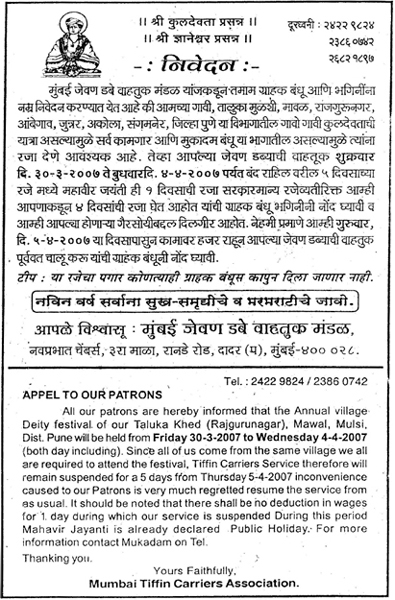
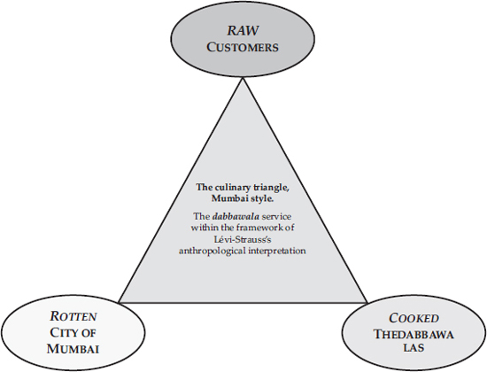

2. Dabbawala Ethics in Transition
DOI: 10.11647/OBP.0031.02
Varkari Sampradaya: faith and work
The tiffin delivery network is not only supported by a complex logistics system (that will be explored further in the next chapter), but also by a special moral code. This code is the expression of the interrelationship between a specific manifestation of the Hindu faith—which can be traced back to the Varkari Sampradaya sect—and India’s unique cultural philosophy. This sect places food at the centre of its philosophy, considering it to be a metaphor for life and its primary, material impulses and spiritual aspirations.
The Varkari Sampradaya (“the tradition of the masters”) sect evolved in the wake of a drive for the renewal of the Hindu religious movement known as Bhakti, which preached pure devotion towards God as the way to salvation.1 These movements developed from the fifth to the sixth century AD in Tamil Nadu, a state in the far south of India. Bhakti means “devoted love” or “loving union”, and indicates a devotional practice not new to Hindu spirituality since it can be traced back through Vedic chants. In the tenth century AD, Bhakti became a more widespread popular movement. Its main attraction and its revolutionary drive within the Hindu tradition came from the idea of a spiritual path open to all, without distinction of gender or caste. It ensured the believer would come into direct contact with God without the need for a go-between.2 These movements clashed with Hindu orthodoxy, which decreed that the Brahmin castes were the masters of rites and go-betweens in the relationship between worshippers and God, ideas that consequently gave Brahmins an overwhelming social status and power.
Varkari Sampradaya is traditionally thought to have emerged around 1100–1120 AD, although this specific Bhakti movement was consolidated by Jnanadeva, whose work Jnaneshvari was actually written in about 1290.3 This is a Marathi commentary on the Bhagavad Gita and is considered the Varkari bible. The text praises devotion to God and to gurus, whom the author says saved him from the corruption of worldly existence. It also celebrates the liberation obtained as a result of attaining mystical union with God; this union is the believer’s ultimate aspiration, although it always remains outside of their grasp, given the immensity of the divine.4 Jnanadeva was the first sant5 of Varkari tradition which also includes Namadeva (c. 1270–1350), Tukarama (1568–1650), Ekanath (c. 1533–1599), as well as several women like Muktabai and Janabai.6
All these figures still inspire the spiritual beliefs of the Mumbai dabbawalas. This religious current in the Nutan Mumbai Tiffin Box Suppliers Charity Trust (NMTBSCT) is manifested in a strong sense of egalitarianism among its members, who come mostly from subordinate castes or are even Outcastes or Dalits.7 Namadeva, for instance, was a tailor, and Tukarama was of the Shudra caste. Recently however, several scholars have argued that in failing to make open criticism of the caste system, the Bhakti movement has involuntarily strengthened it. Furthermore, the disciples of the various Bhakti sects refused to marry in compliance with the membership rules of their own varna and were thus forced to marry amongst themselves. Inevitably this attitude actually created new castes.8
Sants preached not only on social and political issues, but also a doctrine of salvation that included devotion to the name of God, devotion to their own guru, and the importance of religious communion, of coming together in what is called literally “true community” (satsang).9 The devotee must always be committed to the high moral values that are pivotal to the sant’s teachings because these values are not only a source of personal dignity, but also allow devotees to develop mutual respect. Even if a person leads a modest life or lives in outright poverty, their conduct must always be upright and pay service to God, expressing their Bhakti by serving other human beings. Helping others is the equivalent of an act of devotion to God.
Another unique aspect of Varkari Sampradaya is the importance attached to two female figures: in particular the mystical poet Muktabai, who was the sister and co-disciple of Jnanadeva; and Janabai, a servant of Namadeva who devoted verses to Vithoba, addressing the God as a female being named Vithabai. In Janabai’s poetry, as in other works in this tradition, God can be both male and female, and may be addressed in the feminine, as one may address a mother. If the masculine is used, Vithoba is generally linked to Vishnu or the latter’s avatar Krishna, and sometimes it is even linked to Shiva. Vithoba’s cult defies sectarian division, as each year more than 6,000 Vishnu and Shiva devotees go on a pilgrimage to the Vithoba Temple in Pandharpur.10
In 1940, sociologist Irawati Karve took part in a Varkari pilgrimage to Pandharpur, writing a personal description of the experiences of the devout. At the time, the Samyukta Maharashtra movement was promoting the creation of a “united Maharashtra”, whose political materialisation did not come about until two decades later.11 The political commitment to this movement was alive during the pilgrimage and the great flux of Marathi speakers were united by an increasing recognition of their own regional identity.12 For Karve, the pilgrimage was therefore not just a religious event but also represented a metaphor of Maharashtra, a way of giving it a collective definition.13 This political dimension is echoed in the historical moment when the Varkari heritage meshed with that of the great Maratha leader Shivaji, who lived between 1627 and 1680. In the seventeenth century, the Varkari sect was the most important in Maharashtra and the sant Tukarama had a close relationship with Shivaji, archenemy of the Emperor Aurangzeb. It is very likely that in the struggle against the Mughal Empire many Varkaris fought in the ranks of its armies.
Varkari Sampradaya beliefs focus in no small way on the role that food plays in spiritual life. In the poems of the Maratha sants Tukarama, Ekanatha, Namadeva and Jnanadeva, food is present as a metaphor of the encounter with the divine. The worldly or spiritual meal has the task of teaching the eternal values of egalitarianism and brotherhood among the masses. The spiritual practice implies a collective experience of the divine banquet where all are welcome, no food is impure, everyone sits in a circle, nobody is untouchable and all are fed to satiety. The sants may have chosen the food metaphor because it is more understandable to devotees who cannot read or write.14 Although the link between the ethics of the dabbawala association and the Marathi sant message is not always clear, it does seem that the food delivery work of the dabbawalas is inspired at least in part by traditional Varkari Sampradaya ideals.
Talking about himself, Raghunath Medge, president of the NMTBSCT, says:
It is difficult to say whether Medge’s sentiment is shared by all the dabbawalas. Certainly the fact of forming a culturally homogeneous group allows members to identify with a shared religious and historical tradition. For example, the entire service takes a four-day break for pilgrimage to Pandharpur.15

Figure 5. Mumbai. This flyer informs customers that the service will be suspended for four days for the annual festival of the dabbawala villages of origin and one day for the national Mahavir Jayanti holiday, which falls between late March and early April of the Gregorian calendar and celebrates the birth of Mahavira, the spiritual teacher of Jainism. By kind permission of Raghunath Medge.
A tangible sign of the shared religious faith of the dabbawalas can also be seen in the dharamshalas, which are stopovers close to temples where pilgrims can stop to rest. Dharamshalas were erected in Bhimashankar in 1930, in Alandi in 1950, in Jejori in 1984, and in Pandharpur in 2000, complying with the wishes of Madhu Havji Bacche, founder of the NMTBSCT. He had initiated construction of the first two dharamshalas and over the years various dabbawala groups contributed to the completion of others via a voluntary donation system. Medge tells the story:
A Short Story: The Dharamshala Caretaker
I was born in Bombay and I started as a dabbawala when I was twelve. My dad was a dabbawala and he worked with Medge’s father. I never met Bacche, I only knew that he was an important person. He was the one who organised the dabbawala association, turned it into a working group. When they were in Bombay, Bacche, Medge’s father, and my dad stayed together. Living on the street. Bacche also had the idea of building the first dharamshala at Bhimashank. They asked for donations, one rupee, two rupees, five rupees. You can still see all the names. The money was collected over a couple of years: the mukadams gave most money because they ran the line and the dabbawala were employees. After he had collected donations, Bacche bought land and built the dharamshala. Over the years, we built the shops alongside. Here at Alandi there are lots of dharamshalas: the immigrants pay for them to be built, for example the fishmongers have one and so do the greengrocers. But we were the first. When I couldn’t work as a dabbawala anymore, after I had three bicycle accidents, Medge asked me to come and be the caretaker here, at the Alandi dharamshala. I live here, where I have a room with my wife.
Another aspect of dabbawalas’ work that seems to be in line with the Varkari Sampradaya worship ethic is a belief that the human being is a go-between with God. There is a perception that food delivery constitutes an act of religious devotion that reveals the absence of discrimination toward others. Just as the Varkari Sampradaya devotees consider life to be a pilgrimage, the dabbawalas are constantly on the move for their work and for their faith. As one NMTBTC dabbawalas describes:
The origins of a lineage
The dabbawalas define themselves as descendants of the warrior prince Shivaji Bhonsle. He is considered by his followers to be the founder of the Maratha nation because of his relentless struggle against the hegemony of the Mughal Empire. The Emperor Aurangzeb, who contemptuously called him the “Deccan mountain rat” never managed to defeat the tireless rebel. The Emperor’s objective was the gradual transformation of the Empire into a Muslim State, which was implemented—although never completely and never successfully—through the introduction of Islamic law and the elimination of a series of symbols that supported a secular state. The response was a Maratha battle against Muslims. Through guerrilla warfare Marathas avoided fighting out in the open, but destroyed enemy lines of communication and assaulted isolated detachments. This approach required a large number of soldiers, many of whom were recruited amongst Maharashtra farmers, who are probably the ancestors of today’s dabbawalas. Shivaji’s profound knowledge of the territory allowed him to achieve military success, which brought him a reputation as one of the fathers of modern guerrilla warfare. In 1674, during a traditional Hindu ceremony, he was crowned Chattrapati or “Lord of the Universe” by Ramdas, a sant of the Varkari tradition. Contemporary Indians consider Shivaji important for his contribution to the forging of a proud Hindu nationalist spirit in his people.17 The dabbawalas see themselves as bonded to Shivaji by a shared Hindu faith, a fierce sense of independence from any domination, and patriotism towards the State of Maharashtra.
Shivaji is a pivotal figure in Maharashtrian beliefs, fundamental to the understanding of events that developed the political and social scene of recent decades. The mythology of Shivaji is crucial to understand the symbolic reconstruction that underpins Indian systems of political rhetoric, in particular those of the Marathas. Sometimes the interpretations of Shivaji’s contribution differ between Western and Indian scholars. Without detracting from the importance of the Indian studies, they are often ideologically oriented within the Hindu nationalist movement, which reconstructs Shivaji’s heroics and the Maratha movement using not entirely reliable historical sources. For example, in a work by the judge and reformer Mahadev Govind Ranade, Maharashtra’s cultural unity already had its own common language with an important literary tradition, which then evolved into modern Marathi. According to Ranade, this process of linguistic and symbolic amalgamation may also have led to the development of shared social structures and moral codes.
In this perspective, Shivaji’s role was similar to an enzyme in a catalytic process that has already started, bringing together all Marathi-speaking people under one banner and instilling in them a stronger sense of cohesion and community. Ranade also attaches great importance to the Maharashtrian Bhakti movement, which is to say the Varkari Sampradaya that promoted a society without castes.18 This, as well as other historical theories that emphasise Shivaji’s non-Brahmin dimension, highlight how Maharashtra’s political and religious history comprises a complex set of icons, symbols, and proto-ideological ideas which twentieth-century local Indian politics drew upon to develop an independent ideological scheme.
Evidence that the anti-caste drive and religious renewal that had crossed the region from at least the twelfth century became more powerful under Shivaji is also found in the reconstruction of a dispute between Shivaji and local Brahmins, who had denied Kshatriya status to the Kunbi farming caste that later evolved into the Maratha warrior caste.19 Shivaji opposed this decision by handing out privileges and powers to Kunbis who distinguished themselves by their service (mostly military) to the monarch. This challenge to the Brahmin establishment is always an inspirational presence in the Bhakti movement. The story also gives a new symbolic significance to the pre-Aryan divinities: for instance, legend has it that the goddess Bhavani gave Shivaji her invincible sword.20 Further proof of Shivaji’s revolutionary potential can also be found in the post-Independence appearance of readings inspired by Ghandian and Marxist thought, celebrating Shivaji as the enlightened ruler who abolished forced labour and became the symbol of the battle to end the caste system.21
Notwithstanding the merits of their sources, these various historiographical interpretations stress that Shivaji is generally considered to be the father of Maharashtrian nationalism, a powerful archetype who can bring new life to Hindu identity. Shivaji’s appeal was an important factor in the political debate surrounding the formation of the State of Maharashtra and the development of post-colonial Mumbai’s urban culture. It appears that the ethical canons chosen by the dabbawalas are also taken from this legendary ancestor, including gender equality, non-discrimination, Hindu religious beliefs, and the idea of work as a source of strength and liberation from poverty. A retired dabbawala and son of the NMTBSCT founder says:
Caste and descent
Caste is a complex concept and should always be approached with caution and sensitivity given its social, economic, ethnic and religious implications. Many Indian intellectuals are uneasy when they see their society constantly described and interpreted through caste. There are primarily two reasons for this: the first is linked to the awareness that the analysis of India’s caste system is largely a product of western Orientalism;22 the other lies in the fact that this analysis seems to reduce the complexity of India’s (and its diaspora’s) social and economic development to archaic, unchanging categories, without adequate consideration of the massive transformations that modernisation processes and migration dynamics have triggered in India. Rules regarding contamination caused by contact with individuals considered inferior by birth or for frequenting specific places (like hospitals) are being increasingly ignored. The connection between caste and professional specialisations, especially in urban contexts, has also lessened considerably.23
According to Ronald Inden, for far too long western scholars have described Indian society as essentially condemned to backwardness for a number of reasons, with a strong emphasis on the caste system.24 The formal codifications of the system are proposed as a tool for interpreting the present without verifying what the reality has actually become. For Inden, this ahistorical and ingrained approach to Indian civilisation and society constitutes the main weakness of many Indological perspectives of the nineteenth and twentieth centuries. More recently in India, and particularly in the state of Maharashtra, caste rhetoric has been put to controversial political use, especially by the neo-Hindu movement of which the Bharatiya Janata Party is the leading political player. Looking for an alleged racial authenticity, the party used Mumbai as its stage for economic and social demands increasingly and explicitly based on linguistic and caste affiliation.25
To avoid these methodological and ideological pitfalls, it would seem best to introduce a historical perspective for analysing the relevance of caste in relation to the social organisation of the dabbawalas.26 The main stages of this interpretive path are based on an introduction to the concept of caste, an analysis of the bond that links the formation of the Maratha caste with the historical figure of the warrior Shivaji and, lastly, the contextualisation of the development of caste dynamics in Bombay’s industrial and commercial history. A detailed discussion of the political and social life of the city in recent decades does not fall within the remit of this book but, in order to understand the collective dabbawala experience, it is necessary to give a brief overview of the particular cultural-political sphere of which it is part.
A brief introduction to the caste concept
The main traditional sources of Hindu doctrine, the Purusha-sukta hymn in the Rigveda (late second and early first millennium BC) and the Manu Smrti (the Laws of Manu, first millennium BC), indicate that in the caste system the social order is governed by a hierarchy evolved on the basis of ritual purity. The constituent elements of this social order are the categories (identified by means of their varna, or symbolic “colour”) attributed with the three fundamental functions of Indo-Aryan society from the time of its origins. The Brahmins, or priests, have the colour white; the Kshatriya or princes and noble warriors are designated with the colour red; the vaishya or the people (farmers and traders) are symbolically yellow. These three categories (called varna arya or “noble colours”), found in all the different populations that speak Indo-European languages, then became four, with the addition of the shudra, given the symbolic colour black and representing the mass of non-nobles (varna an-arya) referred to by the generic name of dasa (“servants”).
The Laws of Manu entrust the dasa with the task of “serving” the three noble categories also called dvija (which means regenerated or born twice, as their official entrance into society occurs through a rite of initiation that marks a second birth, conferring them with a further positive quality). The different groups of people and, in the broadest sense, the different forms of existence acquired at birth within the varna, are called jati (a word derived from the Sanskrit root jan, meaning “to generate”, a term that incorporates functional and hereditary caste aspects). The actual word “caste” is a Portuguese translation of the term jati, which missionaries rendered with a term that meant “pure” in their language.27 The first three varnas, those of the dvijas, at least theoretically constitute an equal number of jati whose internal subdivisions are usually regarded as subcastes or upajatis, and differ amongst themselves in accordance with family, type of employment, or origin, while a huge number of jatis converge in the shudra varnas, distinguished mainly on the basis of employment or service rendered to the dominant caste.28
Critical interpretations of Hindu ideology and the caste system tend to fall into two different, but in some respects complementary, approaches. The first, preferred above all by Max Weber, fuses the institutionalisation of inequality with the concepts of dharma, samsara and karma.29 Dharma, which is “moral order”, is the ethical imperative that urges the individual to comply with the divine laws of conduct associated with each caste. If the person performs this task adequately, their karma, or “a present action able to influence their rebirth positively or negatively”, will be positive and after their death will allow their spirit to flow back into the samsara, or “the eternal cycle of births and deaths”, with the prospect of reincarnation in a higher caste. Otherwise, they will be reborn into a lower caste or even inferior life forms like animals, plants, etc. The relationship that links the various castes is thus arranged to comply with principles of complementarity and consequently everyone should be eager to maintain a social order that conforms to a moral order (dharma).30 The second approach is that proposed by Louis Dumont, which places the emphasis on the concepts of purity and contamination, as well as on the strict separation of religion from politics and economics.31 Priests are afforded a higher status, beyond considerations of economic or political power, and the caste system should respect compliance of the human sphere with dharma laws, therefore contributing to balance and harmony.
Both approaches have generated extensive criticisms and theoretical developments, and debate continues on the ideological, ethical-religious, political, economic, social and cultural foundations of the caste system.32 Stefano Piano writes that historically the Indian caste system has assumed the characteristics of a closed social group, defined almost exclusively by birth. It includes a number of families and is often, but not always, associated with employment. It is quite significantly characterised by ethnicity and religious or geographical origin and intermarriage. The behaviour of its members is influenced by precise dietary and shared eating rules.33 In more general sociological terms, a caste can be defined as an ascriptive aggregation by right of birth, rigidly superordinated or subordinated to other aggregations of the same type, within a social stratification system in which individuals are not permitted any vertical mobility. David Mamo writes that this interpretation of castes indicates they are distinct social and cultural entities. As such, they tend to create internal subcultures as a consequence of the intensity and quality of communication within the group, compared to that of the group with others. In fact, such communication is fostered and preferred as it is functional to the strengthening of a sense of caste identity.34
Caste and industrialisation in Bombay
As discussed in Chapter One, caste, kinship, and rural-urban relations or rural connections were fundamental to Bombay’s social organisation, so much so that some historians and anthropologists have defined Indian cities as “an urban landscape composed of rural institutions”.35 It is difficult to estimate the exact weight of the caste system either in old Bombay or in modern-day Mumbai, because there has been a significant propensity to believe that castes are not an appropriate social organisation for an industrial urban context.
Davis Kingsley put forward the hypothesis that, with the rapid increase of industrialisation, the caste system would disappear.36 On the other hand, historian Rajnarayan Chandavarkar posited that the current notion of caste would be reformulated incrementally to reflect the growing importance of cities in Indian society. Morris D. Morris, however, argues that the alleged disappearance of castes in the cities is mainly due to the difficulty of finding reliable historical sources to document their existence, and that the role of caste dynamics in Bombay’s early industrial labour market has been underplayed.37 Some scholars have also suggested that caste dynamics exist mainly within the private social sphere and are actually disappearing from the public world.
Bombay’s industrial and social history has shown, instead, that it has two contexts: one public and one private. They are always closely interconnected and interdependent because the social organisation of urban workplaces is linked to neighbourhood and family relationships, as well as regional origins.38 There is little data on the caste composition of Bombay workers, but according to a 1940s survey commissioned by the Bombay Mill Owners Association (BMOA), which referred to the workforce in nineteen factories, most seemed to be Marathas and Kunbi Hindus (approximately 51.8%); Bhayas make up 13.8%; Untouchables accounted for 11.9% and the remaining 5.2% were Muslims.39
The difficulty in defining a worker caste profile lies in the fact that factory register entries are generic, and indicate only religion, jati and place of origin; moreover they lack uniform and mutually exclusive criteria.40 The survey mentioned by Morris noted a relatively low percentage of Untouchables, but that seems to have grown subsequently.41 It is likely that during the launch of the first cotton mills there were few Untouchables in the city since other workers were reluctant to be in the vicinity of Dalits. A document issued by a United Spinning and Weaving Mills manager in 1874 prohibited Untouchables from working in these factories. In the early twentieth century, the number of Untouchables rose significantly and stabilised in the 1920s and 1930s, during industrial strikes. The Dalits’ greater vulnerability meant they could be blackmailed and were often recruited as strike-breakers. During the 1929 general strike, for example, the prominent political Dalit leader Ambedkar strove to provide the workforce needed to continue cotton production.42 Ambedkar became an icon of the Dalit struggle for emancipation and he used this to consolidate the presence of the Untouchables in the industrial workforce, convinced that this might help to reinforce their political capacity and social position.
Importantly, the urban context has partly changed the caste concept by breaking down distinctions based on intermarriage, eating habits, and shared linguistic, regional or religious traits. Bombay’s biggest caste, the Marathas, is actually deemed to be the expression of broader caste units, allied to improve their chances on the city’s labour market.43 Uniting in associations governed by the most influential members, the so-called dadas,44 these groups of people of disparate caste origin are nonetheless able to identify with a wider Maratha denomination. These multi-caste conglomerates often organised whip-rounds to raise funds, and set up a subscription system to ensure welfare and job mediation services for their affiliates.45 Maharashtra society, which is characterised by a certain linguistic and cultural homogeneity that probably facilitated this process, saw numerous jati farmers join the Maratha caste. Through these new affiliations, Rajnarayan Chandavarkar suggests that “caste identities came to be expressed in caste associations which could operate throughout the city”.46 Although they could all be traced back to the same Maratha designation, these “caste associations” allow their members to express their experience of the city on the basis of the various affiliations that made most sense: the village of origin: a shared language (dialect), the district of residence in Bombay, level of education, etc. All of these are transversal affiliations connected to the person’s past that allow them to transcend their jati or upajati origins.
The NMTBSCT has all the features of these caste associations. In addition to the prominence given by the internal hierarchies to the Maratha identity and its most important icons (starting with Chattrapati Shivaji), there were also the common rural origins of many affiliates and a shared language base. Gangaram Talekar, the NMTBSCT secretary, describes the dabbawala affiliation:
One thing that seems to reinforce the association’s identity matrix (although it should be put into the context of a relational mode that is common and widespread throughout India, and which is part of a consolidated code of conduct) is the habit of calling their colleagues with nicknames that refer to the family, and which are assigned according to the age of the person in question. Dabbawalas will call an older person dada (paternal grandfather) or kaka (younger paternal uncle, in other words the father’s younger brother). Peers may call each other bhai, bhau, bhaiya or “brother”. One of four female dabbawalas in the association is called mami or “aunt” (mother’s brother’s wife). Medge explains:
Just as labour recruitment in Bombay’s large cotton mills during the first decades of the twentieth century occurred through complex interwoven links among castes, family, and neighbourhood, today’s channelling of the labour force in Mumbai’s tertiary economy occurs in the same way, especially in contexts where informal economy is prevalent. If the caste associations, of which the NMTBSCT is an example, have been able to act as engines of empowerment for their members, enhancing their contractual position (and, of course, that of the associations themselves), it is largely due to the strong symbolic and affective intensity of the relationships among their members.
The key to the transmission and promotion of these interdependencies has always been the family, which continues to act as a mediator between the private and the public spheres, even in the metropolis. On one hand, the family maintains its significance as the matrix for organising migration plans, marriages between the same jatis, or professional careers. On the other, it stands as a relationship model in an urban context of social relations shaped by supra-urban and supra-national economic, social and political forces. The metropolitan arena is a place where various caste associations live in close contact and never achieve cultural equality, but simply create a dense fabric of transversal relations that find their identity in the interrelation within these associations.
The question of the dabbawala “caste”
In this composite cultural and social order, the dabbawalas see themselves as a “Maratha caste”, part of the Kshatriya varna of warriors and fighters. As already seen, however, most of the dabbawalas originate from the western part of the state of Maharashtra, from small rural villages. Although they are not so far away from the city, their areas of origin have a completely different landscape to that of the city, dominated by cultivated fields and hills covered with sparse bushes. The economy of the home villages is predominantly agricultural and most work derives from this sector: agriculture and dairy farming, with a modest amount of secondary businesses. Medge says: “My wife and my daughter live in Mumbai, my mum lives in the village of Vajori in Rajgurunagar, which is in the Pune district, so she can tend the fields. There’s also my uncle, who was my father’s brother, and his son. Those who are able to work can also live in Bombay, while those who can’t work stay in the village”.
Mukadam, one of the NMTBSCT dabbawalas, explains his family’s geographical situation:
Work in the fields does not ensure a steady income, hence the desire to migrate to a big city and guarantee the family additional earnings. Most dabbawala families do not move to the city as a group. Family members stay in the village, where they continue to farm small plots of land that they own or rent. This migration from the countryside to the city developed with the same dynamics described by cumulative causation theories of contemporary migrations, particularly “chain migration”.48 Sporadic chances to cope with the increased family risks which arise from the effects that metropolitan development triggers on the outskirts will gradually consolidate into a chain migration phenomena facilitated by strengthened family networks and shared geographical origin. The consolidation of migratory movements contributes to the stabilisation of flows because the families of the migrants eventually enjoy an enhanced income and elevation of their social status. Conversely, the families of those who cannot or will not emigrate are the victims of increasing relative poverty.49
In the case of the Mumbai dabbawalas the existence of a migration chain with a considerable history has actually helped build a culture of migration into urban areas with unique features—for instance, the conservation of an ethic founded in rural virtues combined with the encouragement of new migration from villages around Pune towards the metropolis. One NMTBSCT dabbawala describes his employment history and patterns of migration:
Another tells a similar story, in which his family’s income is at the mercy of unpredictable farming conditions and increasingly stretched resources:
The heavy exploitation of the territory, including excessive deforestation in recent years, has significantly deteriorated the conditions of agricultural work. Drought and torrential rain have eroded arable land, rendering it infertile and difficult to work. All this has contributed to increasing emigration towards Mumbai.
A number of testimonies indicate that some dabbawalas identify themselves with the Kunbi jati, a caste found in Pune who work the land (Kunbis and Marathas are closely approximated, and in the 1931 census they were classified as one category).50 There is a possibility that before enlisting in Shivaji’s army the ancestors of the dabbawalas were Vaishya varna and that at the time the term “Maratha” was simply an ethno-linguistic designation identifying Marathi-speaking people. It seems that the intense relationship between Shivaji and the Varkari movement allowed the Kunbis to join its ranks and undertake a “varna leap”. In this way, they were admitted to the Vaishya varna, and this was when the term Maratha began referring to a caste.51 Thus, the term Maratha identified first the people recruited as warriors and then became an explicit caste indicator, subsequently reproduced and reinforced through intermarriage. Medge explains:
This brief review of how the Maratha caste developed is just the tip of the iceberg: it is in no way a complete picture of dabbawala caste organisation, because some workers have different origins from the Pune area. It is significant, however, that most of the dabbawalas come from the same territorial and cultural backgrounds as did most of the Bombay cotton mill workers, which facilitated the development and success of their delivery service. In the same way as other caste associations, the dabbawalas have built their business on the basis of existing linguistic, regional and caste ties, using these common factors as a resource that would generate capital. In Mumbai today, those who are collectively known and recognised as “Marathas” cannot actually be traced precisely to a specific jati. The reason is the gradual erosion of the kinship system organised according to the traditional tenets of intermarriage and shared eating habits that underpin the caste concept, following increased rural migration to the city.
Historically, caste identity was reinforced by conflict and antagonism between Brahmins and Kshatriyas in nineteenth- and twentieth-century public Hindu debates. Brahmins were progressively seen as educated but arrogant, and came to be represented as an effeminate, decadent expression of urban culture. In this way they were a total contrast to the basic Maratha Kshatriya varna values of warfare, rural virtues (honesty, frugality, humility, decorum, etc), devotion to the Bhakti movement and emphasis on a regional, suburban background.52 In Mumbai the significance of belonging to a caste increased insofar as it gave access to overlapping networks. These networks were made acceptable and expendable because of shared ideals of rural virtues, economic opportunities, local alliances, and group affinities that emerge on each occasion thanks to common interests and migration processes.53
Food as a cosmic principle
The NMTBSCT meal delivery service is founded on the unique role that food plays in Indian culture. The concept of “gastrosemantics” is used to define this value that, according to Indian anthropologist Ravindra S. Khare, indicates “a culture’s distinct capacity to signify, experience, systematise, philosophise, and communicate with food and food practices by pressing appropriate linguistic and cultural devices”.54 Khare’s definition points to the pivotal role played by food in India, and is useful for delineating the ritual practices, social behaviour and theological speculations linked to it. Food in India expresses a multitude of classifications—from satisfying daily biological needs to defining social and family relationships, economic transactions, hierarchical boundaries, and ethical and legal systems.55 Food may be approximated to linguistics, aesthetics and grammar for its abstract language; on the other hand, it is a tangible, physical, material substance. This turns it into a cluster of moral meanings and expressions that reflect the needs of the body and its aspiration to spiritual liberation.56
This section does not claim to give a detailed picture of all the different meanings that food acquires in India and its many different cultures. Rather it attempts to define the essence and cultural experience that food evokes among Indians. Referring back to the work by Khare, the term Hindu is used to indicate various traditions that share a common historical civilisation path, so even talking about “Hindu food” becomes infinitely complicated.57 There is no attempt here to standardise the various cultural, ethnic, religious and linguistic currents present in India, only the desire to find a common denominator. Although Hindus, Buddhists and Jains (to name but a few of the many beliefs found in India) share similar food practices, each group has its own gastrosemantics: food and the act of eating it are a multiple but uniform Hindu “Ultimate Reality”; the Jains are subject to strict austerity and denial; Buddhists follow a principle of moderation.58
Although it can be asserted that every community in India has different food ethics, it is still possible to trace a common origin when investigating ancient beliefs and the practices of the various groups speaking Aryan languages. The Aryan peoples settled on the northern Indian plain in about 1500 BC, arriving from central Asia, and their beliefs spread mostly in that part of India.59 Their food model was based on sheep rearing and agriculture, and was underpinned by a philosophical consideration of eating. Food was not only a form of subsistence but also a fundamental part of the great Aryan cosmic moral circle where those who eat—and the food they eat—must be in harmony with the Universe. The food ingested, in relation to this harmony, gives rise to three major transformations: faeces, meat and manas or thought, which is the most precious transformation.60 In Sylvain Lévi’s opinion, Aryan or Vedic culture was characterised by a strong element of violence generated by the frequent use of meat in individual sustenance. Lévi defines the culture as “brutal” and “materialistic”, and its most becoming expression was in the leitmotif of the food and the eaters.61
Wendy Doniger has suggested that the nutritional chain describes the order of the species: “what might appear as a culinary metaphor was really meant as a descriptive account of the natural and social world as organised in a hierarchically ordered food chain”.62 In other words, each species eats in proportion to its strength: from big to small, from strong to weak. The linear sequence described delimits a social space, which is reflected in natural space and in ritual sacrifice, whose expression renews the scale of values. Vedic norms were overturned with the spread of the figure of the renouncer in about the sixth century BC, and were conveyed by religious currents within the Hindus, like the Bhakti, who placed emphasis on service and love.
Great spiritual masters like Buddha and Mahavira (the highest authority of Jainism) promoted a purely vegetarian diet in the fifth century BC.63 Vegetarianism (as well as non-violence), now considered to be the utmost expression of spirituality, was a revolution in Indian society because abstaining from consumption of meat became synonymous with purity and the marker of a true reversal of social values.64 The new diet was not only an expression of a different cuisine, but a new cultural model and worldview.65 Paradoxically, however, the vegetarian choice promoted by Jains and Buddhists strengthened open discrimination against the Aboriginal peoples who lived by hunting and gathering. Through an act of political opportunism they were relegated to the margins of society, deemed as impure and classified as Untouchables of the Dalit caste.
Sanskrit literature also addresses considerations regarding food and sees the placid, generous cow as the quintessential symbol of restraint in the consumption of meat.66 Athraveda, for example, emphasises how the cow should be sacrificed only if sterile. The Brahmins and subsequent Upanishads raise doubts as to the use of ritual sacrifices with animal victims.67 The new spiritual orientation maps out the production and circulation of food applying cosmic logic. The Upanishads affirm that food is a manifestation of Brahma, the Ultimate Reality, and that it influences a Hindu’s interior life to the point of controlling development from one birth to another. For this reason there are multiple food classification charts to establish appropriate roles for nutrition practices. It is essential to specify the contexts, conditions, and quality of the food to be consumed or avoided, because the inner state of the being in this world and beyond is intimately connected to what a person eats.68 This is dharma, the cosmic moral order that regulates food availability for all creatures and at the same time is also expressed through complex social distinctions and rituals.69 This “talking food”, to use Khare’s phrase,70 culminates in the production of a non-dichotomised bond between the creator, the body, and the “I”, evolving from a need rooted in materiality into an expression of the person’s interior life: from generative commodity to cosmic ideal.
This complex universe is seen in the daily lives of people at home and at work, in various ways, since ethical and religious principles are still very much alive in earthly life. In the pragmatic social dimension there is constant interaction between the human and the divine, and it is not limited to the places set aside for worship.71 Gavin Flood makes an interesting distinction between public and soteriological religion: if the latter addresses the individual and their salvation, the former is “the regulation of communities, the ritual structuring of a person’s passage through life and the successful transition, at death, to another world” and “concerned with legitimising hierarchical social relationships and propitiating deities”.72 For the devotee, food is a comprehensive, delicate language marked by a broad spectrum of cosmic, social, karmic, spiritual and emotional messages: a language that speaks both through the choice of ingredients and beyond the boundaries of materiality.
Food-related holy practices
Eaten or even just handled, food is known to have a dual action. First, it provides biological support for the body’s vital processes; secondly, it acts to achieve experiences of “a more subtle nature” because it allows for the amplification of spiritual perceptions by linking belly, mind and soul.73 Foods, especially those considered “good” or “pure”, allow humans to renew primeval harmony among all nature’s creatures. The act of eating actually implies the destruction of a being and awareness of this violence, directly linked to death. This means that the act in itself is problematic, especially with regard to the consumption of meat, which requires the eater to perform a purification ritual to expiate the guilt linked to violence and restore the bond that has been broken by the killing. In turn, the ritual legitimises the eternal nutrition cycle sequence.
Moreover, Nature—perceived as a deity—suffers predatory human actions: agriculture and the gathering of wild berries are part of an exploitation system that causes humanity to seek a justification for its acts. This occurs through rituals celebrating the perpetuation of life by a sacrifice that appears in different forms and may involve people, animals, nature and divinities. The sacrifice generates a pact between living beings, linking them in an ongoing sequence of life and death. The banquet, which everyone attends although in different ways (there are those who eat and those who are eaten), becomes the privileged channel for achieving an inner opening towards the hallowed and greater communion with the divine. Notions underlying the classification of foods thus assume primary importance, since the level of purity brings spiritual elevation of different intensities. This classification differs depending on the various cultures that developed in India.
The spiritual rules connected to nutrition are extensively articulated in the practice of Ayurveda, a term of Sanskrit origin meaning knowledge of life, composed of the word ayus (life) and veda (knowledge).74 Ayurvedic medicine does not separate the health of the body from that of the mind and aims to restore the balance among all the components that reflect an individual’s health: care of organs, psyche and soul; and even the relationship the person has with the environment, relations with the family and with the world at large. For a healthy person, the purpose of Ayurvedic science is to pursue and achieve four objectives in their existence:
These objectives allow equilibrium to be found both for the inner self and with the environment, or better still, a balance between the macrocosm and the microcosm (the body), the latter reflected in the former. Disease is thought to be the result of a breach of this balance and Ayurveda, as a therapeutic science, recommends proper nutrition and yoga as supports to maintaining good health through inner peace, transcending the senses and releasing the bonds with matter.76
Human well-being relies on food and its digestion because the body grows and develops depending on how it is fed. Ayurveda places ample attention on food quality, properties of raw materials, and the processing triggered by agni, the body’s digestive fire. Foods, like everything existing in nature, have three qualities or gunas: sattvic (pure), rajasic (overexcited) and tamasic (rotten). Sattvic or pure foods are the best for eating correctly and they include fresh vegetables, fresh fruit, cereals, natural sweeteners, mother’s milk, butter, ghee, cold pressed oil and shoots. The Bhagavad Gita states that “those foods that enhance life, purity, strength, health, joy and happiness, which are tasty and oily, nutritious and pleasing, are dear to sattvic people” (XVII, 8). Only moderate use should be made of rajasic foods, which often have a spicy taste and include fermented foods, garlic, cheese, sugar, salt, coffee, chocolate, and very strong spices and herbs. The Bhagavad Gita also states that “bitter, acidic, salty, overly hot, pungent, dry or spicy foods are preferred by rajasic persons and generate pain, distress and sickness” (XVII, 9). Finally there is tamasic: damaged or improperly cooked foods, such as fried and frozen foods, and those treated with preservatives or microwaved. Tamasic foods also include mushrooms, meat, fish, onions, garlic and substances like alcohol and tobacco, all of which should be avoided.77 The Bhagavad Gita reads: “the tamasic will prefer food that is tasteless and rotten, which is unclean waste” (XVII, 10).
It is also important to appraise the taste of foods, namely their rasa, because different flavour nuances have different effects on the human body and, not least of all, on the mood of those who consume them.78 Ayurveda recommends taking care of the body by eating regularly and taking daily exercise. It is important to wake up early, to thank the Lord, empty the bowels so as to start a new day without the debris of the day before. Equally it is necessary to clean all parts of the body properly, with particular attention to the “nine gates”. The body is seen as a temple with nine entrances to the outside world: eyes (netra), nose (neti), ears (karna), mouth (mansuya), vagina (yoni), penis (lingam), anus (mula), navel (nabi) and the top of the head (brahmarandra). Massage and meditation are integral to this care as these practices help ward off negative moods so as to avoid anger, envy, greed, jealousy and harming oneself and others.79
What seem to be just rules for proper nutrition and lifestyle actually have a close bearing on the sphere of the sacred. Food is anna, the first Sanskrit word to designate a Brahmin. Everything in the universe is food and interior growth depends on the ability to eat and digest the food that is our lives.80 In particular, the choice of foods to combine tends to avoid the juxtaposition of principles that lack equilibrium and so would lead to inner disharmony if consumed.81 Those who want to keep good karma will avoid combining animal food (obtained by the act of violence intrinsic to slaughter) with vegetables (a spontaneous gift of nature).82 The rule of food harmony tries to achieve an inner balance intended to come close to the harmony of the universe. So, the purer the food is, the more the body acquires its characteristics, enhancing spiritual elevation. This is because foods are not a simple matter: they are a vehicle of subtle information, energies, manifestations of the primordial vibrating energy called Prana.83 Thus, when people eat, they take the Prana contained in the food and circulate it around the body through seven energy centres called chakras (specifically: muladhara, swadhisthana, manipura, anahata, visshuddhi, ajna and sahasrara), which govern various functions and organs. When Prana enters a chakra through food, organs come into contact with it and it takes a specific name, becoming apana at the level of the first chakra, controlling excreta; at the second chakra it is viana, which regulates blood circulation; as samana at the third chakra it regulates the digestive process; prana (without a capital) at the level of the heart chakra, controls the respiratory process; lastly there is the fifth chakra, udana, which controls the diaphragm.84
Action (or non-action) that arises from the fermentation of pure foods within the human belly is thought to bring vital thought processes closer to the cosmos and to the divine. In this way, foods become mediators that can absorb and convey the subtle energies that connect human beings. As mediators they permit the transfer and the “initiatory succession” of energies that offer the eater the possibility of being grafted, the Vedas say, into “cosmic light”. Consequently, the meal is a rite, a moment of exploration, of learning, but also of intense rapport with the other, the Absolute, an act that allows their “realisation in existing and in strength”.85 But there is no dichotomy between what is eaten and the eater because, as Mario Bacchiega says, “everything has been eaten” and “the eater and the eaten are the same thing […] really there is neither eaten nor eater”.86 The extraordinary mystical chant: “I am food, I am food, I who am food, I eat the eater of the food!” expresses the overcoming of the tension between knowledge and love in the symbol of food, because here human and divine action need each other. In this cosmic metabolism, profound unity is achieved: eat the other and be food for the other.87
Food is not only limited to the sphere of the sacred, however: it has an aesthetic, popular aspect that reflects daily life. Indians generally do not possess an in-depth knowledge of all expressions and characteristics that food plays in the culture and spirituality of India, but they internalise the guidelines of nutrition (including the beliefs, functions and traditions related to it) from the families in which they are raised. Often this is represented by the daily rapport that women have with the handling of food and with children. So even if haute cuisine in traditional patriarchal society is the expression of a public and ritual act and the domain of male Brahmins, it is usually the woman who is the leading player in cooking and preparing meals.88
Food in women’s everyday lives
Any discussion involving food must take into account the role of women in the preparation of meals and the close bond between women and the act of cooking. Indian women today enjoy a wide scope of action, but traditionally their place has always been in the home, particularly in the kitchen, where the family shrine was, and still is, placed. The kitchen is the heart of the Hindu home, which is kept as far as possible from sources of contamination such as sleeping quarters or the room where visitors are received. Before entering the kitchen, the cook must clean herself of any contamination that may come from the outside and change clothes, because the purpose of the food preparation process is not only to produce foods that keep the body alive, but to merge the cultural properties of the food transformed by the cooking process itself with those of the people who eat it.89
The woman plays a vital role in cooking for the family and providing food for the gods. This act requires knowledge of the preferences of the deities and those preferences, with relevant recipes, are handed down from mother to daughter. Usually, however, the offering to the gods, called prasad, includes rice boiled in milk, small cakes, a stick of incense and a garland of flowers. After the god has been fed, the leftovers are redistributed among family members. As mentioned previously, the cow, and cattle in general, have a crucial importance in the Hindu religion and in Indian culture. Women are often privileged custodians who wash cows and decorate them for religious ceremonies and festivals. Fresh cow’s milk is used to wash the statues in family temples, while dry dung is used as fuel for cooking (especially in the villages) and to clean the floors of the house and the kitchen. The kitchen floor is used as a table to be set before sitting down for meals. It is always the women who bring the meal to their families and while serving they “give”. Even in modern times, women–especially the older generation–in the villages do not eat with the family, but only after everyone else has finished.
Cooking is not limited to the scope of the food but expresses a wider range of meanings: a woman’s inner heat (a force known as shakti) is said to be ten times higher than that of a man. David Smith writes “it is this force that enables them to give birth, to as it were cook the foetus in the same way as they cook the food that maintains the life of the family they have given birth to. The husband is born again in the son that originates from his wife’s womb. Husband and children are all given life and physical sustenance by the wife”.90 The birth of a child, in particular a son, confirms the woman in her role within the family and through generational continuity she saves her husband from the condition of being a man without descendants. The son will ensure nourishment to his father’s spirit after his death. The woman also renews the act of cooking in every act of sexual intercourse because through her heat she “cooks” the male member.
This symbolism, related to women’s bodies, is not immune to the pure/impure distinction that regulates certain times.91 During the menstrual cycle, for example, women—especially of the higher castes—do not cook or enter the temple.92 The mother’s preference for pure foods ensures her offspring remain healthy in line with the dietary requirements laid down by dharma. Those individuals who are fed pure foods (mainly vegetables) are reborn in a high social status; conversely, those who have eaten animal flesh or pursued less discriminating eating habits, will be reborn in a lower varna.93
This is in no way an exhaustive description of the relationship between the female body and cooking in the broadest sense, but it is useful for understanding the context in which women once operated, and still do, although they now enjoy a freedom that releases them from some traditional domestic constraints, especially if they live in large cities and are relatively wealthy. These constraints do, however, fall upon the work of women of more humble extraction, who perform domestic services in middle-class houses (from cleaning to managing the kitchen). Sociologist Barbara Ehrenreich and anthropologist Arlie Russell Hochschild have shown how, in the battle for equality and the right to self-determination, feminism often hides a form of exploitation carried out by richer, perhaps career-oriented women, towards less-educated or poorer women. Rather than men taking on traditional female tasks as more women head to the workplace, domestic duties are offloaded onto other women.94
The caste hierarchy of food
Food transactions are not only relevant in gender differences; McKim Marriott believes that they could be a primary device for explaining caste organisation.95 The food reflects caste differences through a series of rules with which diners must comply scrupulously to avoid contacts that could render both the food and people who are eating impure. Written rules list the different types of impurities (for example, the moment of birth and death, or the performance of certain manual tasks that involve contact with unclean elements), but generally the act of eating is a far more vulnerable time than others and should be approached with great care. Food rules that affect ordinary meal consumption presume an attention to ingredients (vegetable foods are preferable to animal products); to cooking (preferring food fried in ghee or clarified butter to boiling); place (the eating place should be as far away as possible from possible sources of contamination); cookware (preferring the use of copper or aluminium pans to terracotta because they can be washed with greater ease and do not accumulate residues in porous cavities). Every gesture during the meal must be controlled to avoid making the food inedible. For example, vicinity to lower caste individuals should be avoided, as should the presence of animals or contact with human saliva. Despite being produced by the body, saliva is regarded as “alien” to it because it is a vehicle of potentially harmful substances, even though it is also synonymous with deep acceptance and belonging to the family group.
By tradition, and especially in the first phase of the marriage, a wife eats her husband’s and in-laws’ leftovers so as to be integrated into the family. A parent may consume their child’s leftovers. Sharing a meal is a family action, because the family eats “from the same hearth”.96 If a member breaks a caste rule (for example, by offending a family member), they will not be accepted at family lunches and reintegration is symbolised by a party in which the offended person offers food to the offending person. This gesture allows all other members to reintegrate the offender into the eating circle.97
The rules are stricter for the high castes, in particular for the Brahmins, and impose a series of precautions that do not leave much room for individual freedom.98 For Brahmins in particular, a vegetarian diet is strictly necessary to maintain caste purity and foods should always be placed safely in sealed containers to avoid being contaminated by an outsider’s impure hands. This code of conduct was already noted in the eleventh century by the Arab intellectual Al-Biruni. He describes relations between Hindus and Muslims:
The excerpt highlights how the concept of purity was an element of identification by foreign observers. Food preparation and habits were signals that revealed caste hierarchy and Hindu culture more broadly.
A 1970s study led by Stanley Freed in Shanti Nagar, a village in northern India, showed how the caste hierarchy was based on an asymmetric exchange of food and water. Caste classification is apparent in understanding from whom food can and cannot be accepted. The giver is in a hierarchically superior position to the receiver. The asymmetry of the exchange makes use of cooking techniques. For example a pakka food, cooked in clarified butter, can be taken by members of higher castes; conversely a kaccha food cannot.100 Kaccha and pakka mean literally “raw” and “cooked” but the derived sense has a very extensive application and indicates, on one hand, insecurity and imperfection, and on the other soundness and perfection (a notion that contains a hierarchical nuance). The distinction between these two stages is achieved by the use of ghee. In Brahmanic India, sacrificial food is counterpoised to non-sacrificial food, and the former is always cooked, pakka, protected and sanctified by the ghee used for frying it. Pakka food is less exposed to contamination while kaccha food is more fragile and corruptible.
Modern meaning intends both as cooked food but using different techniques: Kaccha foods are cooked in water while pakka food is essentially fried in ghee and prepared to be consumed outside the home. The cooking sequence is critical in designating one or other type of food. The same principle can be found for water, which retains its purity when kept in a brass jug and can be accepted by members of higher castes when offered by members of lower castes; when it comes from earthenware jugs this is not possible.101 Food thus becomes the expression of a refined taxonomy, functional in a classification of the universe that reflects natural elements and social orders consistent with the construction of a collective sense. Chaos is opposed by a system of linkages between nature and society, abstractions or cultures, in which humans and worldly objects belong to each other according to a logic of obedience to certain criteria.102
Food and the metropolis
In recent years there have been significant transformations in food culture. In the big cities and in diasporic contexts, the caste system softens into a more fluid stratification where surviving inequalities and differences are based on property, power and prestige. Food also reflects these transformations and, indeed, the current scenario of a metropolis like Mumbai is characterised by a public space dominated by an impressive variety of food, including restaurants that serve any type of food and street vendors offering cheap lunches from their stalls, to eat while standing.103 The food sold reflects Mumbai’s cultural habits and traditions, for instance distinguishing between “hot” and “cold” food, depending on the season it is offered. The distinction does not refer to the temperature of the food or its spiciness, but to the effects the foods have on the body. During the main festivities the dishes offered by street vendors are appropriate to the circumstances and are a good alternative to eating lunch out. Vendors often use ghee instead of water to make food pakka (safer). According to Mina Thakur’s research on street food in the city of Guwahati, many customers seek Brahmin vendors to be sure they are buying unpolluted food, or they look for vendors of their own caste offering traditional dishes.104
In Mumbai, the debate about the regulation of street vendors can get very heated. A recent investigation by Jonathan Shapiro Anjaria noted complaints from city associations about vendors selling street food. These vendors are seen as the symbol of a metropolitan space that escapes the control of the authorities and of the flow of migrants arriving in Mumbai. Often the protests are based on two main elements—language and religion—that reflect the offer of non-vegetarian foods from non-Hindu sellers. In deciding who can sell food on Mumbai territory, the city pursues a nativist policy and distinguishes foods that may or may not be cooked on public land.105 Often the younger generation call this “junk food”, using a common English expression that denotes readily available, cheap food of poor quality. It refers to what students eat for lunch at street stalls, like bara pav (a type of bun, cut in half and stuffed with a red or green chilli sauce, potatoes and spices), or pav bhaji (a sandwich accompanied by a mixture of vegetables).
The diversified food on offer reflects the demands of a city where new social classes are stratifying and seeking a variety of choices that were unknown a few years ago. Mumbai has undergone a transformation in recent years that entails the growing presence of middle-class people used to eating out in the evening. It is a relatively recent phenomenon, for previously only people with a relatively low income were in the habit of eating outside their homes. The indoor restaurant, different from street food vendors, reflects and promotes a series of changes in public and private contemporary Indian life induced by increased wages and the entry of middle-class women into the working world. These changes were followed by new experiences of conviviality and socialisation, with the consequent modification to spaces, places, and relationships inside the kitchen.
While there are increasing numbers of trendy new restaurants around the city (with many Italian newcomers), multicultural food is not a recent phenomenon in India. There has been a continuous rotation of renewed migratory waves that bring disparate influences to the city’s flavours: there is a mix of large colonial Bombay hotels used by the British; the already mentioned khanawals; Irani cafés, an important Bombay institution now facing extinction; Western or European-inspired restaurants; and dhabas (eateries offering traditional food). These venues offer cuisine typical of the various regions of northern India: Kashmiri; Punjabi; Pahari; Marwari; Rajastani; Lucknawi.
Although regional differences are countless, a typical lunch includes chappati, paratha or poori (unleavened bread), rice, meat, creamy dhal (lentils), meat cooked in ghee or a typical tandoor, kebabs, seasonal vegetables with yogurt, paneer (cottage cheese cooked with green vegetables or onions), fresh chillies and fresh tomatoes. Desserts are made of milk, paneer, legume flour and white wheat flour cooked with dry walnuts. Lunch is accompanied by drinks like nimbu pani (lemonade) and lassi (iced yoghurt, sometimes flavoured). Also available are southern Indian dishes from Karnataka, Andhra, Hyderabad, Tamil, Chettinad and Kerala. These cuisines are rice-based (long, short, or round grains) or are simply eaten with lentils cooked to make uttapam, idli and dosa. Sauces typical of southern India are made from tamarind, coconut, peanuts and dhal. The food is served on a vazhaillai, a freshly-cut banana leaf. A curious fact related to this “tray” is that the shape of each leaf can be used to identify the food of different communities, a sort of ID card; the arrangement of the food on the leaf also indicates the place of origin.
Mumbaites eat many dishes from nearby Gujarat, a mostly vegetarian diet, which was also widely influenced by Chinese cuisine because of the intense trade that the main port of Surat has always enjoyed with China. There are also typical Maharashtra dishes with their extensive use of fish, and Goan cuisine with its Portuguese influences. Today, however, these are only general categories of catering establishments and the choice of food seems endless. A short stroll in any part of the city will reveal how public space is dominated by the presence of food vendors and places to stop even just for a drink. For example, the middle classes, young students, or professionals from the film world frequent the Barista chain, which offers snacks and coffee in a comfortable setting for chatting or talking business. There are also restaurants serving multi-menus and offering different traditional dishes, or fusions of various food styles known as world cuisine, or kosher Indian, Parsi and “continental” food. Big shopping centres, mainly on the outskirts of the city, have popular food courts offering different types of fare: Punjabi and Udupi; vegetarian and non-vegetarian; Italian ice cream parlours; pizzas; or Chinese and Thai food.
Despite this proliferation of offerings, the constant growth of the dabbawala association nonetheless shows that the cosmopolitan side of the city has not homogenised the sensory category of taste. If anything, it has been enhanced seamlessly with the history of the city, which is able to absorb foreign elements by transforming them through a process of domestication. In this way, Mumbai reflects a multifaceted flexibility and through constant negotiation there is not only a commercial ferment that expresses its nature, but also a broader principle of hope for the multitude of people who live there. This multidimensional coexistence is described by Medge:
The dabbawalas and the food delivery system
Today the debate on food in India is split around demand (in a country where access to food resources is still deeply marked by social inequality); the right to food for all; and—conversely—the symbolic value associated with caste membership.106 In relation to demand, one of India’s most representative voices, the scientist and intellectual Vandana Shiva, suggests that a plan is under way to use food as a weapon against India and, in general, against developing countries, by subtracting resources like biodiversity and water to local communities. This happens, according to Shiva, through the imposition of rules and laws like the agreement on TRIPS (Trade-Related Intellectual Property Rights) and the General Agreement on Trade, both reached within the World Trade Organisation. The liberalisation of seeds imposed by the World Bank has, for example, allowed multinational companies like Monsanto and Cargill to penetrate the Indian market, buying up the sector’s biggest enterprises and persuading farmers to buy very costly fertilisers and hybridised seeds. Nevertheless, this did not give the desired results, particularly as far as cotton was concerned, and led to suicide and fatal starvation for many peasants in debt due to the high cost of seed. Shiva believes that low-productivity monocultures and monopolies symbolise the “masculinisation” of agriculture and, together with the patriarchal globalisation project, lead to an increase in violence against women and minority groups. It is a policy of exclusion that bases its legitimacy on the ownership of living beings and plants, conflicting with the shared knowledge promoted by an agriculture based on diversity, decentralisation and ecological methods.107
In relation to the symbolic value of food, a recent study undertaken of Udupi vegetarian restaurants, typical of southern India but also widely present in Mumbai, shows how caste-system food prohibitions were present in the city until a few years ago, and it is presumed that the situation still largely continues. Until the 1940s, some “Udupi hotels” had three different entrances: one for orthodox Brahmins, one for liberal Brahmins, and one for non-Brahmins. Today this specification is prohibited by law but can still be found in the owner’s surname.108
An interview with a cook who works in the kitchens preparing lunches delivered by dabbawalas revealed that customer demands are not just about ingredients in the dishes, but also about the rules laid down by the ancient Ayurveda science and spiritual concepts linked to food. The cook is Punjabi but has lived in Mumbai for many years, and after a lifetime spent with her husband (the owner of a small dyeing plant), she decided to work preparing meals. She talked about the attention to healthy eating and home-style cooking (home food) that complies with customer requests for food without, for example, garlic, too many spices or oil. There are no special requirements dictated by caste, but through the choice of ingredients it is possible to reconstruct not only taste trends, but also regional origins and spiritual beliefs of the customer.109 Despite the diversity of culinary techniques and connected recipes, the cook outlined a number of elements that are found all over the country:
From an anthropological standpoint, the main concern is not with caste system-related prohibitions as such, but with what they stand for. As Mary Douglas has suggested, the idea of pollution serves both an instrumental and an expressive purpose. Its instrumental purpose usually translates into an attempt to limit individual behaviour through a set of rules. Yet when their expressive purpose is considered, the same proscriptions appear to be “used as analogies for expressing a general view of the social order”.110 As food taboos emphasise cultural differences and reinforce inter-group boundaries, they impose a specific social order. Such norms, derived from clearly defined notions of what is pure and what is impure, will only have significance within the systemic framework they help to enforce.111 While specific ideas of pure and impure take hold as codified norms to prevent contamination, they also give shape to the cognitive system people are taught to rely on in order to recognise and differentiate each other’s social identity in a shared environment.
Therefore, the symbolic boundaries enforced by food rules do not simply instrumentally distinguish what is edible from what is not, but they also expressively depict a whole hierarchy of social relations, marking out the range of structured kinship bonds, separating ethnic groups and highlighting religious affiliations. The resulting mix of cuisines and ingredients thus maps out a complex “food system” of different eating patterns that mirrors a composite community’s daily reproduction of its own social order. Needless to say, in Mumbai this is a very dynamic system that does allow variations, albeit within a recognised, well-entrenched organisational structure.112
Within the context of this food system’s deeper, expressive symbolism, the Mumbai dabbawalas’ food delivery organisation can be viewed as a vehicle of purity within what a Marathi poet refers to as the city’s “putrid culture”, a culture of unavoidable confusion and promiscuity, and a challenge to any conceit of purity preservation.113 Yet in a city as diverse, shape-shifting, at once life-giving and soul-tainting as Mumbai, food delivery services make it possible to preserve bonds of affection and family roles as one’s spouse, parents or relatives prepare their out-of-home family member’s meals at home. Moreover, the dabbawala system enables individuals and their families to uphold nutritional choices that, in terms both of ingredients and taste, adhere to the requirements and norms they most cherish, whether caste-related, status-driven, or in other ways dictated by social, religious or cultural custom. As an added bonus, the system allows its users to avert the risk of ingesting polluted and poor quality food while away from home.
The dabbawalas’ customers can therefore safeguard their own food diversity, as they are not restricted to the limited choice of food available at affordable prices near their place of work, and at the same time they can preserve their own notions of food purity. Although the food they get delivered to them by the dabbawalas may fail to meet caste requirements in full, it usually does comply with most ethnic requisites, at least in the terms of ethnicity demarcation explained by Michael M. J. Fischer: “ethnicity is a process of inter-reference between two or more cultural traditions, and […] these dynamics of intercultural knowledge provide reservoirs for renewing humane values. Ethnic memory is thus, or ought to be, future, not past, oriented”.114
A Mumbai-style interpretation of Claude Lévi-Strauss’s culinary triangle
When Claude Lévi-Strauss proposed his famous “culinary triangle”—borrowing his approach from Jakobson’s concept of the “vowel triangle” as a basic semantic field offsetting universal principles of human linguistics—he explored the opposition of “elaborated” versus “unelaborated” food.115 He set out to explain how a similar contrast among basic categories could serve as a model for the development of food preparation, cooking being, like language, a truly universal marker of humanity. He proposed to contrast the categories of “raw”, “cooked” (“roasted/boiled”) and “rotten” food as basic semantic markers of the complex interactions that transform raw food into cooked food (an essentially “cultural” process) and into rotten food (an apparently “natural” process). A further difference is drawn between roasting and boiling, which entails using a cultural object (a receptacle) to transform the food: “in as much as culture is therefore conceived as a mediation of the relations between man and the world, and boiling demands a mediation (by water) of the relation between food and fire which is absent in roasting”. As “cooking effects […] a mediation between […] the burnt world and the rotten world”, it can be viewed as a metaphor of cultural development.116 Stretching this metaphor a bit, we can represent the dabbawalas as mediators between the strong undertow of a “rotten” city—one where ever shifting patterns of human interaction among individuals and groups with different backgrounds and often conflicting agendas constantly produce change even beyond the subjects’ own reckoning—and the desire to somehow keep things under control. As agents of cultural “elaboration”, enabling customers both to preserve culinary traditions and to facilitate their transformation, the dabbawalas inhabit the highly charged space between the culinary triangle polarities of the “raw” and the “rotten”.

Figure 6. The culinary triangle, Mumbai style. From Sara Roncaglia, Nutrire la città (Milan: Bruno Mondadori, 2010), p. 148. By kind permission of Bruno Mondadori.
In the Mumbai-style culinary triangle, new customers of the dabbawala system can be symbolically portrayed as being still “raw” to the city, i.e. untainted, unelaborated, yet ready to start their trajectories of cultural transformation. The dabbawala association inhabits the category of the “cooked”, as they process customers’ requests and transform their home-cooked food in a cultural expression of the city itself, thanks to the managerial skills and spiritual beliefs that uphold their tradition of service. The city of Bombay-Mumbai as breeding ground for “natural”, unwarranted transformation of any culinary tradition that enters its premises may well be portrayed as the “rotten” pole. The city’s many different souls absorb and develop cultural processes that the metropolis slowly makes its own, re-shaping and perpetuating human knowledge as cultures blend and feed off each other in this fertile “rotten” soil.
As a semantic system of oppositions, says Lévi-Strauss, the culinary triangle may serve “as a formal framework to express other oppositions, either cosmological or sociological”.117 In an ethnographic context, it can be usefully employed to clarify the transformations that take place at a social and cultural level. The dabbawala organisation has been built upon its members’ devotion to the principles of Varkari Sampradaya, and upon a code of conduct that has been laid out according to their founder’s intention to make their work the embodiment of those principles. Shaping their work into a form of spiritual practice, they turn a service economy into a more complex, almost alchemic process, one that infuses business transactions with new and deeper meanings. Just as cooking turns raw food into “socialised” food, so does the dabbawalas’ work enhance the sociability of the city’s inhabitants’ eating practices, as their home-cooked food is often eaten among strangers.
If we take into account the spiritual sphere of Indian food, a parallel can also be drawn between the culinary triangle’s three categories and the three qualities of food according to the Ayurvedic tradition. Thus, “raw” can be matched with the pure, sattvic food, while “cooked” can be linked to rajasic, “rotten” to tamasic food. The longing for sattvic purity that prompts at least some Mumbai customers to choose home-cooked, safe and “holy” food over the (mostly) tamasic food on offer in the city, can be satisfied by the purveyors of the dabba from the home to the workplace, performing a task that can ultimately lead to subtle adaptations in food preparation, gradually changing sattvic sensibilities into a willingness to adapt and experiment with the rajasic.
This is how the dabbawalas can become middlemen capable of transporting “cooked” food to “raw” customers in a city that has a “natural” penchant for accelerating transformation thanks to its mixture of cultures and lifestyles: it is in this sense only that we can portray the process as a progressive “decay of purity”. The importance given to the local “food code”,118 and to how it defines rasa, or “taste”, in interpreting Mumbai, is grounded in the way this code appears to be dominating all others in defining social and personal identities, and—more generally—in outlining the human condition in a given social environment. Human beings experience social relations, place and space through cognition, based on the way they organise sensory perceptions.119 This sensory input is processed within each culture in a specific way: as David Le Breton writes, “faced with the multitude of sensations possible at any time, any society establishes its own selection criteria”.120 To be part of a specific society also means acquiring a particular way of enjoying it. Though it proceeds from a common physiology and shared biological needs, the way a community codifies its perceptions and tastes results in a specific form of social organisation that provides guidance and structure to people’s conceits and purposes.121
The appreciation for the Mumbaite food code’s wide range of expression, with its thick cultural, religious and ethnic implications, is key to the dabbawala enterprise’s enduring success. Beyond the diverse roles that food plays in the urban context and the vast variety of available choices, the popularity of their delivery service indicates that eating home-cooked food—i.e. eating “familiar” food—is a way to comply with rituals. Even in the city’s context of unceasing and extensive transformation, the dabbawalas make it possible to sanctify every meal, preserving a body of knowledge that people are loath to lose. It is not just a matter of compliance with traditional and religious norms, but rather of upholding beliefs and understandings concerning food that transcends hedonistic considerations. Indeed, the dabbawalas concur in structuring a social order capable of accommodating the coexistence of different communities that, while living in close contact with each other, retain distinctive corpora of myths and rituals.
The intricate clockwork by which Mumbai society perpetuates itself in daily life is mirrored by the way the dabbawala delivery system incorporates the urbanised population immigrant experience.122 The complex architecture of spirituality, service ethics, respectful preservation of food requirements (and therefore of the food’s ingredients, as well as of the ways in which food is prepared and processed), and—above all—the social ties subsumed in the preparation and consumption of meals all contribute to this metropolitan immigrant society’s symbolic sphere.
The dabbawala experience can thus also serve as a lens to focus our understanding of the deep emotional and spiritual dimensions that contribute to the city’s cosmology, one that can be shared by all souls that have chosen to live in it. A subtle alchemy of tastes that is also capable of interacting in surprisingly vibrant ways with the stimuli provided by a global economy of which the city of Mumbai is itself the offspring. As a case study, the dabbawala system shows how a form of specialised, culturally-embedded service economy, can empower itself by accessing the wealth of history and tradition of its territory, and can subsequently develop a strong competitive advantage.123 The dabbawalas achieve this commercial success without betraying the heterogeneity of their own cultural roots. Indeed, they succeed by making the intricate mixtures not a factor of chaos but a dynamic form of order.124
Footnotes
1 Giovanni Filoramo (ed.), Storia delle religioni IV: Religioni dell’India e dell’Estremo Oriente (Rome: Laterza, 1996).
2 For a detailed explanation of the manifestations of the Hindu gods Vishnu, Brahma and Shiva, see Alain Daniélou, Mythes et Dieux de l’Inde. Le polythéisme hindou (Paris: Editions du Rocher, 1992).
3 Felix Machado, Jnaneshvari: Path to Liberation (Mumbai: Somaiya, 1998).
4 Gavin Flood, An Introduction to Hinduism (Cambridge: Cambridge University, 1996).
5 Sant is the Hindi term used to define the religious mystic who acts as the spiritual representative within the community. It literally means “good man” and refers, in particular, to the figures of different castes born between the thirteenth and seventeenth centuries.
6 Mary Ford-Grabowsky, Sacred Voices: Essential Women’s Wisdom through the Ages (New York: HarperCollins, 2002); Aliki Barnstone (ed.), The Shambhala Anthology of Women’s Spiritual Poetry (Boston: Shambhala, 2002). Tukarama is probably the most venerated Maharashtra sant. Tukarama soteriology was based on the love of God but, unlike Jnanadeva’s preachings, there was an evident distinction between God and humanity, as he believed that two separate identities are needed to develop a relationship of love. Moreover, Tukarama stated that meditation plays a fundamental role in devotion, because liberation can be obtained only when a person is seated in meditation, repeating the name of the Lord. See Flood (1996), p. 194.
7 It should be pointed out that Jnanadeva was a Brahmin excommunicated for failing to respect the orthodoxy required by his status.
8 MichelguglielmoTorri, Storia dell’India (Bari: Laterza, 2000), p. 139.
9 See Flood (1996), p. 193.
10 Ibid. In the Hindu context, the term God usually refers to Vishnu or Krishna (an avatar and personification of Vishnu), or sometimes to Shiva, although the worship of Vithoba goes beyond sectarian divisions. In the Trimurti, Vishnu the Immanent is the centripetal force that creates light; Brahma is the Immense Being, the orbiting force that creates space and time; and Shiva/Rudra is darkness, the centrifugal force, dispersing and destroying all that exists. See also Daniélou (1992).
11 The Samyukta Maharashtra Samiti was an organization of intellectuals and writers, founded in Pune in the 1950s by the leader Keshavrao Jedhe. It was formed to promote the creation of an independent state for Marathi speakers.
12 See Irawati Karve, “On the Road: A Maharashtrian Pilgrimage”, in The Experience of Hinduism: Essays on Religion in Maharashtra, ed. by Eleanor Zelliot and Maxine Berntsen (New York: State University of New York Press, 1988), pp. 142–73.
13 Anne Feldhaus, Connected Places: Region, Pilgrimage, and Geographical Imagination in India (New York: Palgrave Macmillan, 2003).
14 Vidyut Aklujkar, “Sharing the Divine Feast: Evolution of Food Metaphor in Marathi Sant Poetry”, in The Eternal Food: Gastronomic Ideas and Experiences of Hindus and Buddhists, ed. by R. S. Khare (Albany: State University of New York Press, 1992), pp. 95–116.
15 There are two annual pilgrimages, which last 21 days, to Pandharpur. The first takes place during the Maratha month of ashadi (June/July); the second during kartik (November/December). The two pilgrimages culminate on the day of ekadasi, a day of austerity observed habitually by those who believe in sanatan-dharma or “Krishna consciousness”. Eka means “one” and dasi is the feminine form of dasa, meaning “ten”. Ekadasi is the eleventh day of the full or new moon, every month. On these special days devotees fast by abstaining from grains and legumes, and making a special effort to offer a service of devotion to Lord Krishna. On the day of fasting, if possible, physical effort should be avoided and the believers should dedicate themselves only to devotional services. It is believed that those who fast on this day obtain not only spiritual but also great physical benefits.
16 My thanks to Pinuccia Caracchi, Professor of Hindi Language and Literature at the Faculty of Foreign Languages and Literature, Turin University (Pinuccia Caracchi, personal correspondence).
17 Stanley Wolpert, A New History of India (Oxford: Oxford University Press, 1977).
18 Interpretations were reconstructed thanks to Thomas Blom Hansen, Wages of Violence: Naming and Identity in Postcolonial Bombay (Princeton: Princeton University Press, 2001), pp. 26–27. For further information, see also Mahadeo Govind Ranade, The Rise of Maratha Power (Bombay: Bombay University Press, 1961). The author elaborated the work of Govind Sakharam Sardesai, New History of Marathas (Bombay: Bombay University Press, 1946).
19 Warrior ideology was one of the Shiv Sena’s key tools to penetrate the Maratha Hindu imagination.
20 See Hansen (2001).
21 See Meena Menon and Neera Adarkar, One Hundred Years One Hundred Voices: The Millworkers of Girangaon: An Oral History (New Delhi: Seagull Books, 2004).
22 One European author who looked at the caste concept was French scholar Louis Dumont, certainly from a privileged standpoint: see Louis Dumont, Homo hierarchicus. Le système des castes et ses implications (Paris: Gallimard, 1966). Nonetheless, a complex debate on the subject has also taken place in India. See Dipankar Gupta (ed.), Social Stratification (New Delhi: Oxford University Press, 1991); and R. S. Khare (ed.), Caste, Hierachy and Individualism: Indian Critiques of Luis Dumont’s Contributions (New Delhi: Oxford University Press, 2006).
23 Mysore Narasimhachar Srinivas and M. N. Panini, “Casta”, in Enciclopedia delle scienze sociali, ed. by G. Bedecchi, vol. 1 (Rome: Treccani, 1991).
24 Ronald Inden, Imagining India (Oxford: Blackwell, 1992).
25 For an overview of Mumbai’s political and social situation I recommend the meticulous historical reconstruction in Jim Masselos, The City in Action: Bombay Struggles for Power (New Delhi: Oxford University Press, 2007).
26 I am aware that this perspective is based on sources selected by these same Orientalists, attaching a stereotypical reading of Indian society and culture, and is therefore liable to incur the same generalisations and inaccuracies. Hence the effort to use their reconstructions with due caution, and to bear in mind the scientific debate that arose around those issues.
27 The word jat, which shares the root of the Latin words gens and genus, indicates a concept akin to the English word “kind” and suggests a range of meanings similar to those expressed by the words family, ancestry, lineage, kinship, rank and race.
28 This simplified explanation of the constituent elements of the caste system draws broadly from Stefano Piano, “Lo hinduismo II. La prassi religiosa”, in Hinduismo, ed. by Giovanni Filoramo (Rome: Laterza, 2002), pp. 171-246.
29 Max Weber, “Economic Ethics of the World Religions: New Perspectives. Part Two. The Sociology of Hinduism and Buddhism”, in The Sociology of Religion, rev. ed. (London: Methuen, 1965).
30 Adrian C. Mayer, Caste and Kinship in Central India (Berkeley: University of California Press, 1960).
31 See Dumont (1966).
32 See Gupta (1991); see also Khare (2006).
33 Piano (2002), p. 172.
34 D. Mamo, “Casta”, in Nuovo dizionario di sociologia, ed. by Franco Demarchi, Aldo Ellena, Bernardo Cattarinussi (Milan: San Paolo, 1987), pp. 336–40.
35 Rajnarayan Chandavarkar, The Origins of Industrial Capitalism in India: Business Strategies and the Working Classes in Bombay, 1900–1940 (Cambridge: Cambridge University Press, 1994), p. 219.
36 Kingsley Davis, The Population of India and Pakistan (Princeton: Princeton University, 1951), p. 176.
37 Morris D. Morris, “The Emergence of an Industrial Labour Force in India”, in Social Stratification, ed. by Dipankar Gupta (New Delhi: Oxford University Press, 1991), pp. 231–47 (p. 240).
38 For further information, see also David West Rudner, Caste and Capitalism in Colonial India: The Nattukottai Chettiars (Berkeley: University of California Press, 1994).
39 Morris (1991), p. 240.
40 Chandavarkar (1994), p. 220.
41 Morris (1991), p. 245.
42 Ibid.
43 See Chandavarkar (1994).
44 Dada literally means “grandfather” in Hindi but is used in a colloquial manner to indicate the older siblings or figures from a criminal subculture. “Dada culture” has a long tradition in Bombay’s industrial history as a popular model of authority and power. Dadas often come from humble backgrounds and thanks to strategic relationships can become leaders of associations and bands, and middlemen for finding work. The term dada in this context indicates the exercising of political power that evokes the virile image of a man able to trigger actions in his social context. See Hansen (2001), p. 72.
45 See Chandavarkar (1994).
46 Ibid., p. 234.
47 Psychoanalyst Sudhir Kakar believes that the bond between brothers is the basis of the extended Indian family. In the ideal extended family, the brothers remain together after marriage, bringing their wives into the family circle. The concept of brotherhood includes fraternal loyalty, which resounds in the economic, social and ritual facets of the extended group. See Sudhir Kakar and Katharina Kakar, The Indians: Portrait of a People (New Delhi: Penguin, 2007), p. 9.
48 In reference to the analytical prospects summed up in the so-called new economic theory of migration, see Douglas S. Massey, Joaquin Arango, Graeme Hugo, Ali Kouaouci, Adela Pellegrino and J. Edward Taylor, Worlds in Motion: Understanding International Migration at the End of the Millennium (Oxford: Oxford University Press, 1998). By “chain migration” I mean the migratory phenomena in which both strong and weak social bonds play a key role in perpetuating a migratory flow from a specific area of origin to one (or more) target areas, ensuring a certain stability to these flows even over many generations.
49 “Relative poverty” or “relative deprivation” is a concept introduced in economics by Oded Stark (see Massey et al, 1998) to explain the many spates of emigration. For Stark, it is above all the tension between low (and slow-growing) incomes and high (fast-growing) incomes that generates and nurtures the migratory tendency.
50 I am indebted to Ms Gauri Pathak who conducted research into Mumbai dabbawala management (Gauri Pathak, personal correspondence). For a complete description of Kunbi habits and customs, refer to Robert Vane Russell, The Tribes and Castes of the Central Provinces of India, 4 vols. (London: Macmillan, 1916; repr. New Delhi: Asian Educational Services, 1993).
51 Ibid.
52 Hansen (2001), pp. 30–31.
53 Ibid. I would, however, point out that if it is true that the caste system informs and organises Indian society, it is equally true that independent India was established as a democratic, socialist and secular state. The fundamental principles of the Indian constitution guarantee the equality of all citizens before the law (art. 14); prohibition of all forms of discrimination on the basis of religion, caste, race, sex and place of birth (art. 15); the right to freedom of worship (art. 25); the right to receive an education in one’s own language, writing and culture (art. 29), the promotion of social mobility for disadvantaged castes (art. 16–17). This policy, with appropriate adjustments, has been applied by all state governments in the Union of India, which enjoy a certain degree of legislative autonomy with respect to the inclusion of some groups in the list of disadvantaged social categories that may take advantage of specific social promotion policies. The Indian government, following the typology of Indian communities that had been developed by the British colonizers, classified the most disadvantaged social categories in three groups. The first was called the “Scheduled Castes” and included all the communities of so-called “untouchables”, who now define themselves as “Dalits” (“downtrodden”) in modern India; the second, called the “Scheduled Tribes”, included Adivasi (aboriginal) communities, i.e. non-Hindu populations living in the forests and mountains of the country’s remotest areas; the third groups was called “Other Backward Classes” or simply “Backward Classes” and included many castes that were part of the Shudra, nomads and tribes traditionally known as brigands. See the Constitution of India: http://lawmin.nic.in/olwing/coi/coi-english/coi-indexenglish.htm [accessed 29 June 2012].
54 Ravindra S. Khare, “Food with Saints: An Aspect of Hindu Gastrosemantics”, in The Eternal Food: Gastronomic Ideas and Experiences of Hindus and Buddhists, ed. by Ravindra S. Khare (Albany: State University of New York Press, 1992), pp. 27–52 (p. 44).
55 Patrick Olivelle, “Food in India”, Journal of Indian Philosophy, 23 (1995), 367–80.
56 Ravindra S. Khare, “Introduction”, in The Eternal Food: Gastronomic Ideas and Experiences of Hindus and Buddhists, ed. by Ravindra S. Khare (Albany: State University of New York Press, 1992), pp. 1–26 (p. 1).
57 One needs to bear in mind Michelguglielmo Torri’s point that Indian civilisation should not be identified with the Hindu religion which, in turn, is not defined by discussion of a limited number of texts that thus provide an image of a uniform doctrine. There is a no hard, immutable core in the civilisations because they are all subject to ongoing change through history and that makes it much more complicated to describe them by the use of categories. See Torri (2000), pp. xiv–xv.
58 For a description of the different food styles, see K. T. Achaya, Indian Food: A Historical Companion (New Delhi: Oxford University Press, 1994).
59 There are several theories about Aryan migration to India of which the most prevalent describes a violent foray from Central Asia to the north of India, which might also, as Gavin Flood suggests, reflect on the social structure of Europe where this theory was developed. I think it should be stressed that, over and above the different interpretations, the origin of the Aryans has become important for ideological reasons, both in India and in Europe. In the latter, the “invention” of an Aryan race was the basis of Nazi racist ideology; in India, the Hindu nationalist movement recently embraced the autochthonous origin theory to state that the only real inhabitants of India are the descendants of the ancient Aryans, who professed the Hindu religion. Then there are lay groups and the Marxist Left who identify with the migration from Central Asia so they can say that India has been characterised by the presence of many ethnic groups since time immemorial. For an introduction to Aryan migration, see Flood (1996); and Léon Poliakov, The Aryan Myth: A History of Racist and Nationalistic Ideas in Europe (New York: Basic Books, 1974); and especially Torri (2000). For the Indian thoughts on the theme, see Romila Thapar, “The Theory of Aryan Race and India: History and Politics”, Social Scientist, 24 (1996), 3–29. For the relationship between Aryan civilisation and food, see K. T. Achaya, “In India: civiltà pre-ariana and ariana” in Storia e geografia dell’alimentazione, ed. by Massimo Montanari and Françoise Sabban, 2 vols. (Turin: Utet, 2006), pp. 144–52.
60 K. T. Achaya, A Historical Dictionary of Indian Food (New Delhi: Oxford University Press, 1998); and Achaya (1994).
61 Sylvain Lévi, La Doctrine du sacrifice dans les Brahmanas (Paris: Ernest Leroux, 1898). For complete comments on the subject, see Brian K. Smith, “Eaters, Food and Social Hierarchy in Ancient India: A Dietary Guide to a Revolution of Values”, Journal of the American Academy of Religion, 58 (1990), 177–206.
62 Wendy Doniger (ed.), The Laws of Manu (London: Penguin, 1991).
63 See Achaya (2006).
64 Ahimsa is one of the Jain religion’s fundamental principles and has become one of the essential rules of pan-Indian thought. The principle is respected by Jain monks and includes strict rules about food: they cannot eat after sunset, when a living organism could be swallowed in the darkness; they cannot cook food, they only accept it from devotees of the faith, and only leftovers, not food cooked specifically for them. To prepare for asceticism the monks perform different fasts, which may be the progressive limitation of some foods, the exclusion of certain foods (apart from those already normally prohibited: meat, honey, some vegetables, unripe fruit, alcohol), or even a complete rejection of any kind of nourishment to the point of suicide by starvation. See Carlo Della Casa, Il Gianismo (Turin: Bollati Boringhieri, 1993).
65 Indian states, with the exception of the states of Bengal, Kerala, Nagaland and Meghalaya, have integrated their laws with the principles of vegetarian ethics. Article 48 of India’s Constitution prohibits the slaughter of cows, calves and other milk or draught cattle. Article 48 in its entirety states: “Organisation of agriculture and animal husbandry. The State shall endeavour to organise agriculture and animal husbandry on modern and scientific lines and shall, in particular, take steps for preserving and improving the breeds, and prohibiting the slaughter of cows and calves, and other milk and draught cattle”. See the Constitution of India, Ministry of Law and Justice, Government of India (2011), available at http://indiacode.nic.in/coiweb/welcome.html [accessed 29 June 2012].
66 In addition to religious explanations, there are also demographic considerations that have given rise to different interpretations of the prohibition of eating cow flesh. These include the demographic growth of Vedic society in 1800–800 BC, leading to a reduction of meat consumption per capita and a trend for a diet consisting of cereals, vegetables, and dairy products. See Massimo Livi Bacci, Popolazione e alimentazione. Saggio sulla storia demografica europea (Bologna: Il Mulino, 1993). Also, according to Marvin Harris, cows in India had core tasks in the entire agricultural cycle: they drew the plough to turn the heavy Ganges plain earth, so it was therefore preferable to use them for agricultural work and not as a source of nutrition. See Marvin Harris, Good to Eat: Riddles of Food and Culture (Long Grove, IL: Waveland, 1985).
67 Today, Hindus still worship cows and bulls as deities: in Hindu mythology Shiva rides the bull Nandi, and Krishna, protector of children and avatar of Vishnu, is represented as a cattle herder. This has become a key element of Hindu identity, especially in the thinking of the Indian right-wing, to the point of discrediting historical sources and the works of the Sanskrit scholars who documented livestock sacrifice as both a ritual and a source of livelihood.
68 Khare (1996).
69 Doniger (1991).
70 Khare (1996), p. 18.
71 Pier Giorgio Solinas, “Soggetti estesi e relazioni multiple. Questioni di antropologia indianista”, Società Degli Individui, 25 (2006), available at http://www.antropologica.unisi.it/images/a/ad/L’in-dividuo.pdf [accessed 29 June 2012]. DOI: 10.1400/65102
72 Flood (1996), pp. 13–16. See also Richard Gombrich, Theravada Buddhism: A Social History from Ancient Benares to Modern Colombo (New York: Routledge, 1988).
73 Mario Bacchiega, Il pasto sacro (Padova: Cidema, 1971), p. 137.
74 The main sources of Ayurveda are the Caraka Samhita (Caraka Collection) describing the legend of the origins of Ayurveda and the Susruta Samhita (Susruta Collection), which is especially important for surgery. See Isabella Miavaldi, La cucina ayurvedica (Milan: Xenia, 1999).
75 Ibid., pp. 12–13.
76 There is an extensive bibliography on the birth and evolution of yoga. For instance: Mircea Eliade, Yoga, Immortality and Freedom (London: Routledge, 1958); by the same author Techniques du Yoga (Paris: Gallimard, 1948).
77 Miavaldi (1999), p. 38; and Amadea Morningstar and Urmila Desai, The Ayurvedic Cookbook (New Delhi: Motilal Banarsidass, 1994). See also Dominik Wujastyk (ed.), The Roots of Ayurveda: Selections from Sanskrit Medical Writings (London: Penguin, 2003).
78 Rasa literally means “lymph” or “edible juice”.
79 Gabriella Cella Al-Chamali, Ayurveda e salute. Come curarsi con l’antica medicina indiana (Milan: Sonzogno, 1994).
80 David Frawley, Yoga and Ayurveda: Self-Healing and Self-Realisation (Delhi: Motilal Banarsidass, 2000).
81 Bacchiega (1971), p. 143.
82 This hypothesis seems universal within food rules imposed by different religions. In Judaism, Deuteronomy (Chapter XIV), there is the famous rule that prohibits cooking the kid in its mother’s milk, so forbids combining the violence of slaughtered meat with the mild, pure and gentle gift or milk.
83 Deborah Pavanello, Cibo per l’anima. Il significato delle prescrizioni alimentari nella grandi religioni (Rome: Mediterranee, 2006).
84 Ibid., pp. 127–28.
85 Bacchiega (1971), p. 270.
86 Ibid., p. 271.
87 Raimundo Panikkar, The Vedic Experience: Mantramanjari (New Delhi: Sanctum, 1977), pp. 306–07.
88 See Kirti Narayan Chaudhuri, Asia before Europe: Economy and Civilisation of the Indian Ocean from the Rise of Islam to 1750 (Cambridge: Cambridge University Press, 1991); and Charles Malamoud, Cooking the World: Ritual and Thought in Ancient India (Delhi: Oxford University Press, 1996).
89 SeeAchaya (1994).
90 David Smith, Hinduism and Modernity (Oxford: Blackwell, 2003), p. 110.
91 A clarification is required here of the terms “pure” and “impure”. These are not necessarily used as moral judgements: Indians believe that they refer to a physical condition. Impurity is represented by nature and its manifestations, which may lead to contamination and must be limited in order to prevent infection or disease. It is clear that this dichotomy also leads to social hierarchical distinctions that define the relationships between the castes, whereby upper castes maintain their purity by avoiding contact with impurities, which are passed on to lower castes.
92 See Smith (2003).
93 Mario Piantelli, “Lo hinduismo. I. Testi e dottrine”, in Hinduismo, ed. by Giovanni Filoramo (Rome: Laterza, 2002), p. 90.
94 Barbara Ehrenreich and Arlie Russell Hochschild, Global Woman: Nannies, Maids, and Sex Workers in the New Economy (London: Granta, 2003). See also Henrike Donner, Domestic Goddesses: Maternity, Globalization and Middle-class Identity in Contemporary India (London: Ashgate, 2008).
95 McKim Marriott, “Caste Ranking and Food Transactions: A Matrix Analysis”, in Structure and Change in Indian Society, ed. by Milton Singer and Bernard S. Cohn (Chicago: Aldine, 1968), pp. 133–72.
96 Lawrence A. Babb, “The Food of the Gods in Chhattisgarh: Some Structural Features of Hindu Ritual”, Southwestern Journal of Anthropology, 26 (1970), 287–304 (p. 297).
97 Ibid.
98 Dumont (1996).
99 Al-Biruni, Alberuni’s India: An Account of the Religion, Philosophy, Literature, Geography, Chronology, Astronomy, Customs, Laws, and Astrology of India about A.D. 1030, trans. by E.C. Sachau (New Delhi: Munshiram Manoharlal, 1992), vol. I, p. 25. My quote is from Smith (2003), p. 73.
100 Malamoud (1996); Achaya (1994).
101 Stanley A. Freed, “Caste Ranking and the Exchange of Food and Water in a North Indian Village”, Anthropological Quarterly, 43 (1970), 1–13.
102 Brian K. Smith, Classifying the Universe: The Ancient India Varna System and the Origins of Caste (New York: Oxford University Press, 1949).
103 Frank F. Conlon, “Dining Out in Bombay/Mumbai: An Exploration of an Indian City’s Public Culture”, in Urban Studies, ed. by Sujata Patel and Kushal Deb (New Delhi: Oxford University Press, 2006), pp. 390–413; and Rashmi Uday Singh, Times Food Guide Mumbai 2007 (New Delhi: The Times of India, 2007).
104 The notion of “safe” and “unpolluted” food is obviously to be taken to mean parameters other than those of hygiene and cleanliness. I refer to the rules aimed at preserving caste purity which see the Brahmin caste at the top of the social hierarchy. This position allows them to cook food for all other castes. Irene Tinker, Street Foods: Urban Food and Employment in Developing Countries (New York: Oxford University Press, 1997), p. 179.
105 Jonathan Shapiro Anjaria, “Street Hawkers and Public Space in Mumbai”, Economic and Political Weekly, 27 May 2006, pp. 2140–46.
106 For a full discussion of the concept of “food for all”, see Jean Drèze and Amartya Sen, Hunger and Public Action (New Delhi: Oxford University Press, 1989). The debate revolves around several key concepts: food sovereignty; food safety; and the right to food. In-depth references can be found on the websites of the FAO or of several NGOs involved in international cooperation projects.
107 Vandana Shiva, India Divided: Diversity and Democracy Under Attack (New York: Seven Stories Press, 2005). By the same author: Water Wars: Privatization, Pollution, and Profit (Cambridge, MA: South End Press, 2004); Earth Democracy: Justice, Sustainability, and Peace (Cambridge, MA: South End Press, 2005).
108 See Vegard Iversen and P. S. Raghavendra, “What the Signboard Hides: Food, Caste and Employability in Small South Indian Eating Places”, Contributions to Indian Sociology, 40 (2006), 311–41 DOI: 10.1177/006996670604000302; and U. B. Rajalakshmi, Udupi Cuisine (Bangalore: Prism, 2000).
109 For the sake of completeness, I include part of the interview: “My customers ask for food without garlic, that’s not too spicy and oily. They’re health-conscious people. If anyone has special problems, like they suffer from diabetes, I’m careful with the ingredients even though it’s difficult to cook separately just for one person. If someone doesn’t want potatoes, I cook a mix of vegetables, but my food is very simple, home food. As the customer’s mother or wife were cooking. I’m originally from the Punjab: my mother and aunts taught me to cook. I do those same dishes for my customers”.
110 Mary Douglas, Purity and Danger: An Analysis of Concepts of Pollution and Taboo (London: Routledge, 1970), p. 4.
111 Ibid., p. 35.
112 The theoretical reference is described in Mary Douglas, Implicit Meanings (London: Routledge, 1975).
113 The Marathi poem Mumbai by Narayan Surne (translated into English by Mangesh Kulkarni, Jatin Wangle and Abhay Sardesai) is taken from Sujata Patel and Alice Thoner (eds.), Bombay Mosaic of Modern Culture (New Delhi: Oxford University Press, 1995), p. 147. The verse referring explicitly to Mumbai as a rotten culture is on p. 148, as follows: “We move on again,/settle in another vacant lot;/And live out the legacy/of this putrid culture”.
114 Michael M. J. Fischer, “Ethnicity and the Post-Modern Arts of Memory”, in Writing Culture: The Poetics and Politics of Ethnography, ed. by James Clifford and George E. Marcus (Berkeley: University of California Press, 1984), pp. 194–233 (p. 201).
115 Claude Lévi-Strauss, L’Origine des manières de table (Paris: Plon, 1968). The Jakobson’s concept is explained in A. Duranti, Antropologia del linguaggio (Rome: Meltemi, 2000); Lévi-Strauss’s appraisal of his theory is briefly described in Claude Lévi-Strauss, “The Culinary Triangle”, in Food and Culture: A Reader, ed. by Carole Counihan and Penny Van Esterik (New York: Routledge, 1997), pp. 36–43 (pp. 36–37).
116 Lévi-Strauss (1968), p. 426; Counihan and Penny Van Esterik (1997), pp. 36–37.
117 Ibid., p. 479.
118 I use the term to translate code alimentaire and code gustatif, according to the definition that Lévi-Strauss gives in Le cru et le cui (Paris: Plon, 1964), p. 265.
119 David Le Breton, La Saveur du monde: une anthropologie des sens (Paris: Editions Métailié, 2006), p. xiv.
120 Ibid.
121 Ibid.; and Paul Stoller, The Taste of Ethnographic Things: The Senses in Anthropology (Philadelphia: University of Pennsylvania Press, 1992).
122 I specifically refer to Abdelmalek Sayad’s reflection on the capacity of the migrant’s construction of social experience to act as mirror of symbolic structures and required practices that characterize the host society, see Abdelmalek Sayad, L’immigration ou le paradoxe de l’altèrité (Brussels: De Boeck Université, 1991).
123 Nicola Bigi, “Quell’atmosfera culturale che rende economicamente speciale una città” (interview with A. J. Scott) in Dialoghi Internazionali 6 (Milan: Bruno Mondadori, 2007).
124 Jane Jacobs, The Death and Life of Great American Cities (New York: Random House, 1961).